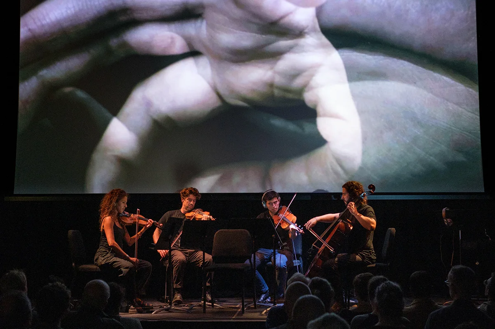
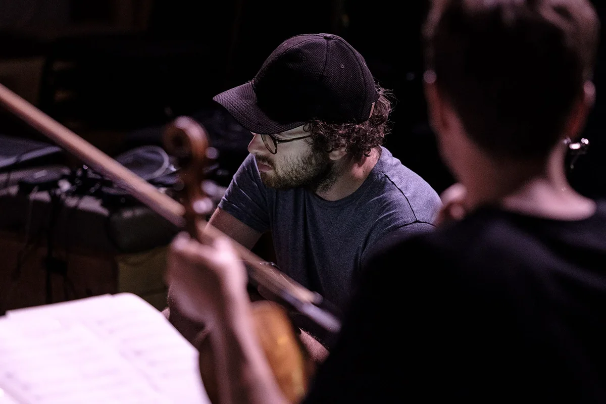

<!DOCTYPE html>
<html lang="en">

<head>
  <meta charset="UTF-8">
  <meta name="viewport" content="width=device-width, initial-scale=1.0">
  <title>A Mouth In Search Of A Voice: Workshops for people who stammer</title>
  <meta name="description"
    content="Free creative workshops for people who stammer in Bristol, London, North Kent and online. Explore voice, story, and music with professional musicians. Part of a new multimedia project by composer Jamie Hamilton and Phaedra Ensemble.">

  <!-- Open Graph / Social -->
  <meta property="og:type" content="website">
  <meta property="og:title" content="A Mouth In Search Of A Voice: Workshops for people who stammer">
  <meta property="og:description"
    content="Free creative workshops for people who stammer. Explore voice, story, and music in Bristol, London, North Kent and online.">
  <meta property="og:image" content="./preview.webp">
  <meta name="twitter:card" content="summary_large_image">

  <!-- Favicon - Mouth shape -->
  <link rel="icon"
    href="data:image/svg+xml,<svg xmlns='http://www.w3.org/2000/svg' viewBox='0 0 100 100'><ellipse cx='50' cy='50' rx='45' ry='25' fill='none' stroke='%23f5f5f4' stroke-width='8'/></svg>">

  <!-- Google Fonts -->
  <link rel="preconnect" href="https://fonts.googleapis.com">
  <link rel="preconnect" href="https://fonts.gstatic.com" crossorigin>
  <link
    href="https://fonts.googleapis.com/css2?family=Space+Grotesk:wght@300;400;700&family=IBM+Plex+Sans:wght@300;400;700&family=JetBrains+Mono:wght@300;400;700&display=swap"
    rel="stylesheet">

  <!-- Tailwind CSS -->
  <script src="https://cdn.tailwindcss.com"></script>
  <script>
    tailwind.config = {
      theme: {
        extend: {
          fontFamily: {
            display: ['Space Grotesk', 'sans-serif'],
            mono: ['JetBrains Mono', 'monospace'],
            sans: ['IBM Plex Sans', 'sans-serif'],
          },
          colors: {
            stone: {
              900: '#1c1917',
              800: '#292524',
              100: '#f5f5f4',
              200: '#e7e5e4',
            },
            teal: {
              950: '#042f2e',
              700: '#0f766e',
            },
            // Narrative Section Colors - Adjust these for the About section
            narrative: {
              main: '#1A1A1A',   // Main text narrative (slightly lighter than black)
              accent: '#002FA7', // Secondary text narrative (Contemporary Art Klein Blue)
            }
          }
        }
      }
    }
  </script>

  <!-- React & ReactDOM (Production) -->
  <script crossorigin src="https://unpkg.com/react@18/umd/react.production.min.js"></script>
  <script crossorigin src="https://unpkg.com/react-dom@18/umd/react-dom.production.min.js"></script>

  <!-- Babel -->
  <script src="https://unpkg.com/@babel/standalone/babel.min.js"></script>

  <style>
    html,
    body {
      overflow-x: hidden;
      max-width: 100vw;
      -webkit-overflow-scrolling: touch;
      /* iOS smooth scroll */
    }

    /* Prevent horizontal overscroll on both platforms */
    html {
      overscroll-behavior-x: none;
    }

    /* Keyboard focus styles */
    a:focus-visible,
    button:focus-visible,
    input:focus-visible,
    select:focus-visible,
    textarea:focus-visible {
      outline: 2px solid #002FA7;
      outline-offset: 2px;
    }
  </style>
</head>

<body class="bg-stone-900 text-stone-100 antialiased">

  <div id="root"></div>

  <script type="text/babel">
    const { useState, useEffect, useRef, useCallback, useMemo } = React;

    // --- COMPONENTS ---

    // New Content Component to start clean
    const HeroContent = ({
      opacity = 1,
      subtitleOpacity = 1,
      dateOpacity = 1,
      includeLink = true
    }) => (
      <div className="flex flex-col items-center justify-center text-center space-y-8" style={{ opacity }}>
        {/* Main Title - Adjust 'text-5xl' (mobile) and 'text-7xl' (desktop) to change size */}
        <h1 className="text-5xl md:text-7xl font-display font-bold uppercase tracking-tight leading-[0.85] mb-4">
          A M
          <span className="inline-block mx-[0.05em] align-middle relative border-[0.15em] border-current rounded-full"
            style={{
              width: '1.2em',
              height: '0.65em',
              transform: 'translateY(-0.1em)'
            }}
          />
          UTH<br />
          IN SEARCH<br />
          OF A VOICE
        </h1>
        {/* Subtitle */}
        <h2 className="text-lg md:text-2xl font-sans text-stone-300 max-w-lg mx-auto leading-tight" style={{ opacity: subtitleOpacity }}>
          Voice, story, music:<br />Workshops for people who stammer
        </h2>

        {/* Workshop List Table */}
        <div className="flex flex-col gap-2 font-mono text-xs md:text-sm uppercase tracking-wide text-stone-400/80" style={{ opacity: dateOpacity }}>
          <div className="flex justify-between gap-8 border-b border-stone-700/50 pb-1">
            <span>28th Feb</span>
            <span className="text-right">Arnolfini, Bristol</span>
          </div>
          <div className="flex justify-between gap-8 border-b border-stone-700/50 pb-1">
            <span>4th Mar</span>
            <span className="text-right">Online</span>
          </div>
          <div className="flex justify-between gap-8 border-b border-stone-700/50 pb-1">
            <span>7th Mar</span>
            <span className="text-right">Arnolfini, Bristol</span>
          </div>
          <div className="flex justify-between gap-8 border-b border-stone-700/50 pb-1">
            <span>8th Apr</span>
            <span className="text-right">Online</span>
          </div>
          <div className="flex justify-between gap-8 border-b border-stone-700/50 pb-1">
            <span>11th Apr</span>
            <span className="text-right">Sun Pier House, Chatham</span>
          </div>
          <div className="flex justify-between gap-8 border-b border-stone-700/50 pb-1">
            <span>12th Apr</span>
            <span className="text-right">Centre 151, London</span>
          </div>
          <div className="flex justify-between gap-8 border-b border-stone-700/50 pb-1">
            <span>18th Apr</span>
            <span className="text-right">Sun Pier House, Chatham</span>
          </div>
        </div>

        {/* Subtle Sign Up Button - Excluded from echoes via visibility */}
        <a href="https://www.eventbrite.com/cc/voice-story-music-stammer-workshops-4807288"
          target="_blank"
          rel="noopener noreferrer"
          className="mt-4 font-mono text-xs uppercase tracking-[0.2em] text-stone-400 hover:text-stone-100 transition-colors border-b border-stone-700 hover:border-stone-400 pb-1 pointer-events-auto cursor-pointer relative z-50"
          style={{
            visibility: includeLink ? 'visible' : 'hidden',
            opacity: dateOpacity
          }}>
          Sign Up
        </a>
      </div>
    );

    const NarrativeNode = ({ children, className = "", onLayout, id, anchor = "center" }) => {
      const nodeRef = useRef(null);
      const [opacity, setOpacity] = useState(0);

      useEffect(() => {
        let rafId = null;

        const updateLayout = () => {
          if (nodeRef.current) {
            const rect = nodeRef.current.getBoundingClientRect();
            const section = nodeRef.current.closest('section');
            const sectionRect = section ? section.getBoundingClientRect() : { top: 0, left: 0 };

            // Calculate anchor Y for layout
            let anchorY = rect.top + rect.height / 2;
            if (anchor === "bottom") anchorY = rect.bottom;
            if (anchor === "top") anchorY = rect.top;

            if (onLayout) {
              onLayout(id, {
                x: rect.left + rect.width / 2 - sectionRect.left,
                y: anchorY - sectionRect.top,
                width: rect.width,
                height: rect.height
              });
            }

            // Calculate opacity based on viewport position
            const viewportHeight = window.innerHeight;
            const elementCenter = rect.top + rect.height / 2;
            const triggerZoneTop = viewportHeight * 0.95;
            const triggerZoneBottom = viewportHeight * 0.1;

            if (elementCenter > triggerZoneTop) {
              setOpacity(0);
            } else if (elementCenter < triggerZoneBottom) {
              setOpacity(1);
            } else {
              const progress = (triggerZoneTop - elementCenter) / (triggerZoneTop - (viewportHeight * 0.8));
              setOpacity(Math.min(1, Math.max(0, progress)));
            }
          }
        };

        const handleScroll = () => {
          if (rafId) return; // Skip if a frame is already scheduled
          rafId = requestAnimationFrame(() => {
            updateLayout();
            rafId = null;
          });
        };

        updateLayout();
        window.addEventListener('scroll', handleScroll, { passive: true });
        window.addEventListener('resize', updateLayout);
        return () => {
          window.removeEventListener('scroll', handleScroll);
          window.removeEventListener('resize', updateLayout);
          if (rafId) cancelAnimationFrame(rafId);
        };
      }, [id, onLayout, anchor]);

      return (
        <div ref={nodeRef}
          className={`relative flex items-center justify-center ${className}`}
          style={{
            opacity,
            willChange: 'opacity',
            transition: 'opacity 50ms linear'
          }}>
          {children}
        </div>
      );
    };

    const NarrativePaths = ({ nodes, scrollProgress }) => {
      const [pathLengths, setPathLengths] = useState({});
      const pathRefs = useRef({});

      // Calculate paths between nodes using numerical sorting (node-1, node-2, ... node-10)
      const nodeIds = Object.keys(nodes).sort((a, b) => {
        const numA = parseInt(a.split('-')[1]);
        const numB = parseInt(b.split('-')[1]);
        return numA - numB;
      });
      const paths = [];

      useEffect(() => {
        // Measure path lengths after render to support dash-offset animation
        const lengths = {};
        Object.keys(pathRefs.current).forEach(id => {
          if (pathRefs.current[id]) {
            lengths[id] = pathRefs.current[id].getTotalLength();
          }
        });
        setPathLengths(lengths);
      }, [nodes]);

      for (let i = 0; i < nodeIds.length - 1; i++) {
        const start = nodes[nodeIds[i]];
        const end = nodes[nodeIds[i + 1]];

        if (start && end) {
          const deltaY = end.y - start.y;
          const cp1x = start.x;
          const cp1y = start.y + deltaY * 0.6;
          const cp2x = end.x;
          const cp2y = start.y + deltaY * 0.6;

          // Normalize scroll progress for this specific path segment
          // scrollProgress prop is already normalized (0-1) for the section
          const segmentStart = i / (nodeIds.length - 1);
          const segmentEnd = (i + 1) / (nodeIds.length - 1);

          const segmentProgress = Math.min(1, Math.max(0, (scrollProgress - segmentStart) / (segmentEnd - segmentStart)));

          const d = `M ${start.x} ${start.y} C ${cp1x} ${cp1y}, ${cp2x} ${cp2y}, ${end.x} ${end.y}`;

          // Determine if we should reverse the path for the text to keep it upright
          // Rule: If end is to the left of start, reverse it. 
          // If strictly vertical, keep it top-to-bottom.
          const shouldReverseText = end.x < start.x;
          const textD = shouldReverseText
            ? `M ${end.x} ${end.y} C ${cp2x} ${cp2y}, ${cp1x} ${cp1y}, ${start.x} ${start.y}`
            : d;

          paths.push({
            id: `path-${i}`,
            d,
            textD,
            label: i === 0 ? "CONNECTING..." : i === 1 ? "VOICE MAPPING" : i === 2 ? "DYSFLUENCY" : i === 3 ? "STAMMERING" : i === 4 ? "REROUTING" : i === 5 ? "SONIC DATA" : i === 6 ? "FLOW STATE" : "TOPOGRAPHY",
            progress: segmentProgress,
            isReversed: shouldReverseText
          });
        }
      }

      return (
        <svg className="absolute inset-0 w-full h-full pointer-events-none z-0 overflow-visible">
          <defs>
            <marker id="crosshair" viewBox="0 0 10 10" refX="5" refY="5" markerWidth="6" markerHeight="6">
              <path d="M 0 5 L 10 5 M 5 0 L 5 10" fill="none" stroke="#002FA7" strokeWidth="0.5" />
            </marker>
          </defs>
          {paths.map((path) => {
            const length = pathLengths[path.id] || 0;
            const offset = length * (1 - path.progress);

            return (
              <g key={path.id}>
                {/* Visual Path */}
                <path
                  ref={el => pathRefs.current[path.id] = el}
                  id={path.id}
                  d={path.d}
                  fill="none"
                  stroke="#002FA7"
                  strokeWidth="0.75"
                  strokeOpacity={length ? (0.2 + (path.progress * 0.3)) : 0}
                  strokeDasharray={length}
                  strokeDashoffset={offset}
                  markerStart={length ? "url(#crosshair)" : ""}
                  markerEnd={length && path.progress > 0.95 ? "url(#crosshair)" : ""}
                />

                {/* Invisible path for text orientation correction */}
                <path
                  id={`${path.id}-text`}
                  d={path.textD}
                  fill="none"
                  stroke="none"
                />

                <text fontSize="8" fontFamily="JetBrains Mono" className="uppercase tracking-[0.2em] fill-narrative-accent/40" style={{ opacity: path.progress }}>
                  <textPath href={`#${path.id}-text`} startOffset={path.isReversed ? "40%" : "30%"}>
                    {path.label}
                  </textPath>
                </text>
              </g>
            );
          })}
        </svg>
      );
    };


    const VisualEngine = ({ scrollProgress = 0, theme = 'brackish' }) => {
      // Derived Visual State
      const rawEchoCount = Math.min(15, scrollProgress * 50);
      const echoCount = Math.floor(rawEchoCount);
      const echoRemainder = rawEchoCount % 1;
      const verticalSpacing = 10 + (scrollProgress * 60);
      const driftExponential = 1 + (scrollProgress * 2);
      const blurAmount = scrollProgress * 8;

      // Simple Theme Logic
      const isLight = theme === 'neuro' || theme === 'narrative';
      const isNarrative = theme === 'narrative';

      const getThemeStyles = (tName) => {
        if (tName === 'narrative') {
          return {
            bg: "bg-[#f8f5eb]", // Off-White/Cream: R: 248, G: 245, B: 235
            text: "text-stone-900",
            accent: "text-stone-400",
            gradient: "from-[#f8f5eb] via-[#f2eee1] to-[#ebe7d8]",
            mapLines: "stroke-stone-300",
            blend: "mix-blend-multiply"
          };
        } else if (tName === 'neuro') {
          return {
            bg: "bg-white",
            text: "text-black",
            accent: "text-blue-600/30",
            gradient: "from-white via-slate-50 to-slate-200",
            mapLines: "stroke-blue-200",
            blend: "mix-blend-multiply"
          };
        } else {
          return {
            bg: "bg-stone-900",
            text: "text-stone-100",
            accent: "text-teal-700/50",
            gradient: "from-stone-900 via-stone-800 to-teal-950",
            mapLines: "stroke-stone-700",
            blend: "mix-blend-overlay"
          };
        }
      };

      const brackishStyles = getThemeStyles('brackish');
      const narrativeStyles = getThemeStyles('narrative');

      // Determine active theme based on discrete switch (for text/grid colors)
      const currentThemeStyles = theme === 'narrative' ? narrativeStyles : brackishStyles;

      // Calculate transition progress (crossfade finish at 0.6 scroll)
      const themeProgress = Math.min(1, scrollProgress / 0.6);

      const echoInitialOffset = 0;
      const echoInitialOffsetX = 0;
      const echoOffset = 15;
      const opacityDecay = 70;

      // Fading Logic
      // --- HERO TEXT FADE SETTINGS ---
      // This ratio determines the final opacity of the text by the time it reaches 100% VH scroll.
      // 0.25 = 25% of the opacity it had when the background turned white (classy "ghost" overlay).
      // 0.00 = Complete fade-out by the time the narrative page is reached.
      const NARRATIVE_PERSISTENCE_RATIO = 0.06;

      let mainOpacity, dateOpacity;

      if (scrollProgress <= 0.6) {
        // Zone 1 (0 to 0.6): Slow linear fade to maintain presence during background shift
        mainOpacity = Math.max(0, 1 - scrollProgress * 0.8);
        dateOpacity = Math.max(0, 1 - scrollProgress * 1.0);
      } else {
        // Zone 2 (0.6 to 1.0): Accelerated fade once background is fully white
        const mainAt60 = 1 - (0.6 * 0.8); // ~0.52
        const dateAt60 = 1 - (0.6 * 1.0); // ~0.40
        const t = (scrollProgress - 0.6) / 0.4; // Normalized progress through the narrative entry (0 to 1)

        // Gradually reduce remaining opacity by the ratio defined above
        const reductionFactor = 1 - NARRATIVE_PERSISTENCE_RATIO;
        mainOpacity = mainAt60 * (1 - t * reductionFactor);
        dateOpacity = dateAt60 * (1 - t * reductionFactor);
      }

      // --- EXPERIMENTAL TOGGLES ---
      const ENABLE_ECHO_LEGIBILITY = true;

      return (
        <div className={`fixed inset-0 w-full h-full z-0 overflow-hidden pointer-events-none`}>
          {/* Layer 1: Base (Brackish) */}
          <div className={`absolute inset-0 bg-stone-900 transition-colors duration-700`}>
            <div className={`absolute inset-0 bg-gradient-to-br transition-colors duration-700 ${brackishStyles.gradient}`} />
          </div>

          {/* Layer 2: Narrative (fades in) */}
          <div
            className={`absolute inset-0 bg-[#f8f5eb] transition-colors duration-700`}
            style={{ opacity: themeProgress }}
          >
            <div className={`absolute inset-0 bg-gradient-to-br transition-colors duration-700 ${narrativeStyles.gradient}`} />
          </div>

          {/* SVG Grid/Topo (Static, but color switches) */}
          <svg className="absolute inset-0 w-full h-full pointer-events-none opacity-30" xmlns="http://www.w3.org/2000/svg">
            <defs>
              <pattern id="grid" width="40" height="40" patternUnits="userSpaceOnUse">
                <path d="M 40 0 L 0 0 0 40" fill="none" stroke="currentColor" strokeWidth="0.5" className={`transition-colors duration-700 ${currentThemeStyles.mapLines}`} />
              </pattern>
            </defs>
            <rect width="100%" height="100%" fill="url(#grid)" opacity="0.3" />
          </svg>

          {/* Main Content Container */}
          <div className="absolute inset-0 flex items-center justify-center p-8">
            <div className="relative w-full max-w-4xl flex flex-col justify-center items-center">

              {/* Echoes Layer */}
              <div className="relative z-10 w-full text-center">
                {[...Array(Math.ceil(rawEchoCount))].map((_, i) => {
                  const factor = i + 1;
                  // Smooth the intensity divisor to avoid sudden jumps at echoCount 3
                  const divisor = 1 + Math.min(2, Math.max(0, rawEchoCount - 1) * 0.5);
                  let opacity = 1 - (factor * (opacityDecay / 100) / divisor);

                  // Fade in the newest echo
                  if (i >= echoCount) {
                    opacity *= echoRemainder;
                  }

                  const expFactor = Math.pow(factor, driftExponential);

                  return (
                    <div
                      key={i}
                      className={`absolute left-0 right-0 w-full select-none pointer-events-none transition-colors duration-700 ${currentThemeStyles.accent}`}
                      style={{
                        top: 0,
                        transform: `translate3d(${echoInitialOffsetX + (expFactor * echoOffset)}px, ${echoInitialOffset + (expFactor * verticalSpacing)}px, 0)`,
                        mixBlendMode: currentThemeStyles.blend,
                        filter: `blur(${blurAmount * (factor * 0.3)}px)`,
                        willChange: 'transform, filter',
                        zIndex: -i
                      }}
                    >
                      <HeroContent
                        opacity={Math.max(0, opacity * mainOpacity)}
                        subtitleOpacity={ENABLE_ECHO_LEGIBILITY ? 0.2 : 1}
                        dateOpacity={ENABLE_ECHO_LEGIBILITY ? 0 : dateOpacity}
                        includeLink={false}
                      />
                    </div>
                  );
                })}

                {/* Main Text Layer (Top) - Layered for smooth color crossfade */}
                <div className="relative z-20 pointer-events-auto">
                  {/* Brackish Text (fades out) */}
                  <div
                    className={`absolute inset-0 flex items-center justify-center ${brackishStyles.text}`}
                    style={{
                      opacity: mainOpacity * (1 - themeProgress),
                      pointerEvents: themeProgress < 0.5 ? 'auto' : 'none',
                      willChange: 'opacity'
                    }}
                  >
                    <HeroContent opacity={1} subtitleOpacity={1} dateOpacity={dateOpacity} includeLink={false} />
                  </div>

                  {/* Narrative Text (fades in) */}
                  <div
                    className={`relative flex items-center justify-center ${narrativeStyles.text}`}
                    style={{
                      opacity: mainOpacity * themeProgress,
                      pointerEvents: themeProgress >= 0.5 ? 'auto' : 'none',
                      willChange: 'opacity'
                    }}
                  >
                    <HeroContent opacity={1} subtitleOpacity={1} dateOpacity={dateOpacity} includeLink={false} />
                  </div>
                </div>
              </div>
            </div>
          </div>


          {/* Noise Texture */}
          <div className="absolute inset-0 opacity-20 pointer-events-none mix-blend-overlay" style={{ backgroundImage: `url("data:image/svg+xml,%3Csvg viewBox='0 0 200 200' xmlns='http://www.w3.org/2000/svg'%3E%3Cfilter id='noiseFilter'%3E%3CfeTurbulence type='fractalNoise' baseFrequency='0.85' numOctaves='3' stitchTiles='stitch'/%3E%3C/filter%3E%3Crect width='100%25' height='100%25' filter='url(%23noiseFilter)'/%3E%3C/svg%3E")` }}></div>
        </div >
      );
    };


    const Navigation = ({ theme }) => {
      const isLight = theme === 'neuro' || theme === 'narrative';
      const textColor = isLight ? "text-stone-900" : "text-stone-100";

      return (
        <nav className={`fixed top-0 w-full p-8 flex justify-between uppercase font-mono text-xs tracking-widest opacity-80 z-50 transition-colors duration-700 ${textColor} pointer-events-auto`}>
          {/* Left: Project Title / Dates */}
          <a href="#dates-section" className="hover:opacity-100 transition-opacity">Dates</a>

          {/* Right: Nav Links */}
          <div className="flex gap-8">
            <a href="#about" className="hover:opacity-100 transition-opacity">About</a>
            <a href="https://www.eventbrite.com/cc/voice-story-music-stammer-workshops-4807288" target="_blank" rel="noopener noreferrer" className="hover:opacity-100 transition-opacity">Sign Up</a>
          </div>
        </nav>
      );
    };

    // Hero Sign Up Link - Rendered outside VisualEngine for clickability (same pattern as Navigation)
    const HeroSignUpLink = ({ scrollProgress, theme }) => {
      const isLight = theme === 'neuro' || theme === 'narrative';

      // Calculate opacity to match the hero content fade (mirrors dateOpacity logic in VisualEngine)
      let linkOpacity;
      if (scrollProgress <= 0.6) {
        linkOpacity = Math.max(0, 1 - scrollProgress * 1.0);
      } else {
        const dateAt60 = 1 - (0.6 * 1.0);
        const t = (scrollProgress - 0.6) / 0.4;
        const reductionFactor = 1 - 0.06;
        linkOpacity = dateAt60 * (1 - t * reductionFactor);
      }

      // Hide completely when scrolled past hero
      if (scrollProgress > 0.8) linkOpacity = 0;

      const textColor = isLight ? 'text-stone-600' : 'text-stone-400';
      const hoverColor = isLight ? 'hover:text-stone-900' : 'hover:text-stone-100';
      const borderColor = isLight ? 'border-stone-400' : 'border-stone-700';
      const hoverBorder = isLight ? 'hover:border-stone-600' : 'hover:border-stone-400';

      return (
        <a
          href="https://www.eventbrite.com/cc/voice-story-music-stammer-workshops-4807288"
          target="_blank"
          rel="noopener noreferrer"
          className={`fixed left-1/2 top-1/2 -translate-x-1/2 z-30 font-mono text-xs uppercase tracking-[0.2em] ${textColor} ${hoverColor} transition-colors border-b ${borderColor} ${hoverBorder} pb-1 pointer-events-auto cursor-pointer`}
          style={{
            transform: 'translate(-50%, 290px)',
            opacity: linkOpacity,
            pointerEvents: linkOpacity > 0.1 ? 'auto' : 'none'
          }}
        >
          Sign Up
        </a>
      );
    };

    const App = () => {
      const [scrollY, setScrollY] = useState(0);
      const [theme, setTheme] = useState('brackish');
      const [nodeCoords, setNodeCoords] = useState({});

      const handleNodeLayout = useCallback((id, coords) => {
        setNodeCoords(prev => {
          const current = prev[id];
          if (current &&
            current.x === coords.x &&
            current.y === coords.y &&
            current.width === coords.width &&
            current.height === coords.height) {
            return prev;
          }
          return {
            ...prev,
            [id]: coords
          };
        });
      }, []);

      const handleEmailClick = (e) => {
        e.preventDefault();
        const u = "stammerproject";
        const d = "gmail.com";
        window.location.href = `mailto:${u}@${d}`;
      };

      useEffect(() => {
        let rafId = null;

        const updateScroll = () => {
          const y = window.scrollY;
          setScrollY(y);

          const heroHeight = window.innerHeight;
          if (y > heroHeight * 0.6) {
            setTheme('narrative');
          } else {
            setTheme('brackish');
          }
        };

        const handleScroll = () => {
          if (rafId) return;
          rafId = requestAnimationFrame(() => {
            updateScroll();
            rafId = null;
          });
        };

        window.addEventListener('scroll', handleScroll, { passive: true });
        return () => {
          window.removeEventListener('scroll', handleScroll);
          if (rafId) cancelAnimationFrame(rafId);
        };
      }, []);

      const [windowHeight, setWindowHeight] = useState(window.innerHeight);

      useEffect(() => {
        const handleResize = () => setWindowHeight(window.innerHeight);
        window.addEventListener('resize', handleResize);
        return () => window.removeEventListener('resize', handleResize);
      }, []);

      const visualProgress = Math.min(1, Math.max(0, scrollY / (windowHeight || 1)));

      // Calculate progress through the narrative section for path drawing
      const [narrativeProgress, setNarrativeProgress] = useState(0);

      useEffect(() => {
        let rafId = null;

        const calculateNarrativeProgress = () => {
          const aboutSection = document.getElementById('about');
          if (aboutSection) {
            const rect = aboutSection.getBoundingClientRect();
            const sectionHeight = aboutSection.offsetHeight;
            const triggerPoint = window.innerHeight * 0.6;
            const scrollRange = sectionHeight + triggerPoint * 0.5;
            const easedProgress = Math.min(1, Math.max(0, (triggerPoint - rect.top) / scrollRange));
            setNarrativeProgress(easedProgress);
          }
        };

        const handleScroll = () => {
          if (rafId) return;
          rafId = requestAnimationFrame(() => {
            calculateNarrativeProgress();
            rafId = null;
          });
        };

        calculateNarrativeProgress();
        window.addEventListener('scroll', handleScroll, { passive: true });
        return () => {
          window.removeEventListener('scroll', handleScroll);
          if (rafId) cancelAnimationFrame(rafId);
        };
      }, [windowHeight]);

      return (
        <div className="relative min-h-[250vh]">
          <Navigation theme={theme} />
          <VisualEngine scrollProgress={visualProgress} theme={theme} />
          <HeroSignUpLink scrollProgress={visualProgress} theme={theme} />
          <main className="relative z-10">
            {/* Hero Spacer */}
            <div id="hero" className="h-screen w-full flex items-end justify-center pb-12 pointer-events-none">
              <div className="animate-bounce opacity-50 text-stone-200">
                <svg xmlns="http://www.w3.org/2000/svg" width="24" height="24" viewBox="0 0 24 24" fill="none" stroke="currentColor" strokeWidth="2" strokeLinecap="round" strokeLinejoin="round"><path d="m6 9 6 6 6-6" /></svg>
              </div>
            </div>


            {/* Narrative */}
            <section id="about" className="min-h-screen relative z-10 py-24 mt-24 text-narrative-main overflow-visible">
              <NarrativePaths nodes={nodeCoords} scrollProgress={narrativeProgress} />

              <div className="max-w-6xl mx-auto px-8 relative z-10">

                {/* 12-Column Grid Layout */}
                <div className="grid grid-cols-12 gap-y-32 items-center">

                  {/* Node 1: Header - SECTION 01 (Centered) */}
                  <div className="col-start-1 col-span-12 flex justify-center">
                    <NarrativeNode id="node-0" onLayout={handleNodeLayout} anchor="bottom" className="opacity-60 z-10 relative">
                      <span className="font-mono text-xs tracking-[0.3em] text-narrative-accent uppercase border-b border-narrative-accent/30 pb-2">
                        01 / About
                      </span>
                    </NarrativeNode>
                  </div>

                  {/* Node 2: Main Hook (Larger - Left) */}
                  <div className="col-start-1 col-span-10 md:col-start-1 md:col-span-7 text-left">
                    <NarrativeNode id="node-1" onLayout={handleNodeLayout}>
                      {/* Tweak size/font/style here: (e.g., text-3xl, md:text-5xl, font-sans, font-bold) */}
                      <p className="text-3xl md:text-5xl font-sans text-narrative-main leading-tight opacity-90">
                        Free creative workshops for people who stammer in Bristol, London, North Kent and online.
                      </p>
                    </NarrativeNode>
                  </div>

                  {/* Node 3: Secondary Text (Shifted Right - Text Left) */}
                  <div className="col-start-3 col-span-10 md:col-start-6 md:col-span-7">
                    <NarrativeNode id="node-2" onLayout={handleNodeLayout} className="z-10 relative">
                      {/* Tweak size/font/style here: (e.g., text-xl, md:text-2xl, italic) */}
                      <p className="text-xl md:text-2xl font-sans text-narrative-accent leading-relaxed opacity-80 text-left">
                        Together with professional musicians, we'll collectively explore our voices through exercises drawn from theatre, music and storytelling - experimenting with the ways we can navigate, reroute and reimagine language as stammerers.
                      </p>
                    </NarrativeNode>
                  </div>

                  {/* Node 4: Recording Info (Larger - Left) */}
                  <div className="col-start-1 col-span-10 md:col-start-2 md:col-span-6 text-left">
                    <NarrativeNode id="node-3" onLayout={handleNodeLayout}>
                      {/* Tweak size/font/style here: (e.g., text-2xl, md:text-4xl) */}
                      <p className="text-2xl md:text-4xl font-sans text-narrative-main leading-tight opacity-90">
                        The workshops will be recorded, and your voice will be woven into a new piece of music by composer and stammerer <a href="https://www.jamiehamilton.net" target="_blank" rel="noopener noreferrer" className="underline decoration-narrative-accent/30 hover:decoration-narrative-accent transition-all">Jamie Hamilton</a>.
                      </p>
                    </NarrativeNode>
                  </div>

                  {/* Node 5: Main Info (Right of Center) */}
                  <div className="col-start-1 col-span-11 md:col-start-7 md:col-span-5 text-left">
                    <NarrativeNode id="node-4" onLayout={handleNodeLayout} className="z-10 relative">
                      {/* Tweak size/font/style here: (text-lg, md:text-xl) */}
                      <p className="text-lg md:text-xl font-sans text-narrative-main/80 leading-relaxed text-left">
                        The workshops are part of <a href="https://www.jamiehamilton.net" target="_blank" rel="noopener noreferrer" className="underline decoration-narrative-accent/30 hover:decoration-narrative-accent transition-all">A Mouth In Search Of A Voice</a>, a new music and multimedia project by Jamie Hamilton and the music group <a href="https://www.phaedraensemble.com" target="_blank" rel="noopener noreferrer" className="underline decoration-narrative-accent/30 hover:decoration-narrative-accent transition-all">Phaedra Ensemble</a>. The work passes language and narrative through stammered voices - disrupting and reimagining them through dysfluency - and draws on ideas of coastlines, flow and unreliable narration.
                      </p>
                    </NarrativeNode>
                  </div>

                  {/* Node 6: Image 1 (Ensemble - Shifted Right - Asymmetrical) */}
                  <div className="col-start-2 col-span-11 md:col-start-5 md:col-span-8">
                    <NarrativeNode id="node-5" onLayout={handleNodeLayout} className="aspect-video w-full z-10">
                      
                    </NarrativeNode>
                    <div className="mt-2 font-mono text-[10px] text-narrative-accent/50 tracking-widest uppercase">FIG A — PHAEDRA ENSEMBLE (Photo: Dimitri Djuric)</div>
                  </div>

                  {/* Node 7: Premiere Info (Shifted Left) */}
                  <div className="col-start-1 col-span-11 md:col-start-2 md:col-span-6 text-left">
                    <NarrativeNode id="node-6" onLayout={handleNodeLayout} className="z-10 relative">
                      <p className="text-lg md:text-xl font-sans text-narrative-accent/70 leading-relaxed text-left">
                        The final work will be premiered by Phaedra Ensemble in October 2026 with live performances at the <a href="https://thedockyard.co.uk/" target="_blank" rel="noopener noreferrer" className="underline decoration-narrative-accent/30 hover:decoration-narrative-accent transition-all">Historic Dockyard Chatham</a> and <a href="https://arnolfini.org.uk/" target="_blank" rel="noopener noreferrer" className="underline decoration-narrative-accent/30 hover:decoration-narrative-accent transition-all">Arnolfini</a> in Bristol, combining the workshop recordings with live music and video.
                      </p>
                    </NarrativeNode>
                  </div>

                  {/* Node 8: Header - SECTION 02 (Centered) */}
                  <div className="col-start-1 col-span-12 flex justify-center mt-24">
                    <NarrativeNode id="node-7" onLayout={handleNodeLayout} anchor="bottom" className="opacity-60 z-10 relative">
                      <span className="font-mono text-xs tracking-[0.3em] text-narrative-accent uppercase border-b border-narrative-accent/30 pb-2">
                        02 / More Info
                      </span>
                    </NarrativeNode>
                  </div>

                  {/* Node 9: Eligibility (Shifted Left) */}
                  <div className="col-start-1 col-span-11 md:col-start-1 md:col-span-6 text-left">
                    <NarrativeNode id="node-8" onLayout={handleNodeLayout} className="z-10 relative">
                      <p className="text-xl md:text-2xl font-sans text-narrative-main/90 leading-tight text-left">
                        Open to anyone who stammers, 16+. No experience needed - just curiosity and a willingness to experiment with your voice.
                      </p>
                    </NarrativeNode>
                  </div>

                  {/* Node 10: Duration (Shifted Right - Text Left) */}
                  <div className="col-start-3 col-span-10 md:col-start-6 md:col-span-6">
                    <NarrativeNode id="node-9" onLayout={handleNodeLayout} className="z-10 relative">
                      <p className="text-xl md:text-2xl font-sans text-narrative-main/90 leading-tight text-left">
                        The workshops last around four hours. You'll be working in a group alongside musicians, in a welcoming, stammering-friendly environment, with an experienced support team on hand.
                      </p>
                    </NarrativeNode>
                  </div>

                  {/* Node 11: Image 2 (Jamie - Shifted Left - Asymmetrical) */}
                  <div className="col-start-1 col-span-11 md:col-start-1 md:col-span-7">
                    <NarrativeNode id="node-10" onLayout={handleNodeLayout} className="aspect-video w-full z-10">
                      
                    </NarrativeNode>
                    <div className="mt-2 font-mono text-[10px] text-narrative-accent/50 tracking-widest uppercase text-right">FIG B — JAMIE HAMILTON</div>
                  </div>

                </div>
              </div>
            </section>

            <div className="h-[7vh]"></div>

            {/* Bottom Section with Grid Background */}
            <div className="relative">
              {/* Grid overlay with gradient fade-in */}
              <div className="absolute inset-0 pointer-events-none overflow-hidden"
                style={{
                  maskImage: 'linear-gradient(to bottom, transparent 0%, black 200px)',
                  WebkitMaskImage: 'linear-gradient(to bottom, transparent 0%, black 200px)'
                }}>
                <svg className="w-full h-full opacity-[0.13]" xmlns="http://www.w3.org/2000/svg">
                  <defs>
                    <pattern id="bottom-grid" width="40" height="40" patternUnits="userSpaceOnUse">
                      <path d="M 40 0 L 0 0 0 40" fill="none" stroke="#002FA7" strokeWidth="0.5" />
                    </pattern>
                  </defs>
                  <rect width="100%" height="100%" fill="url(#bottom-grid)" />
                </svg>
              </div>

              {/* Section 03 Heading (Centered) */}
              <div id="dates-section" className="max-w-4xl mx-auto px-8 mb-12 relative z-10 flex justify-center">
                <NarrativeNode id="dates-heading" className="w-full flex justify-center">
                  <span className="font-mono text-xs tracking-[0.3em] text-narrative-accent uppercase border-b border-narrative-accent/30 pb-2 opacity-60">
                    03 / When & Where
                  </span>
                </NarrativeNode>
              </div>

              {/* Workshop List Table - Revisited for Narrative Flow */}
              <section className="max-w-xl mx-auto px-4 md:px-8 mb-16 relative z-10 w-full">
                <NarrativeNode id="dates-table" className="w-full">
                  <div className="flex flex-col gap-2 font-mono text-[10px] md:text-sm uppercase tracking-wider text-narrative-main/80 pt-12 w-full">
                    <div className="flex gap-2 md:gap-4 border-b border-narrative-accent/10 pb-2 font-bold text-narrative-accent">
                      <span className="w-16 md:w-20 shrink-0">Date</span>
                      <span className="flex-1">Location</span>
                      <span className="w-20 md:w-32 shrink-0 text-right md:text-left">Time</span>
                    </div>
                    <div className="flex gap-2 md:gap-4 border-b border-narrative-accent/10 pb-1">
                      <span className="w-16 md:w-20 shrink-0">28th Feb</span>
                      <span className="flex-1">Arnolfini, Bristol</span>
                      <span className="w-20 md:w-32 shrink-0 text-right md:text-left">11am - 3pm</span>
                    </div>
                    <div className="flex gap-2 md:gap-4 border-b border-narrative-accent/10 pb-1">
                      <span className="w-16 md:w-20 shrink-0">4th Mar</span>
                      <span className="flex-1">Online</span>
                      <span className="w-20 md:w-32 shrink-0 text-right md:text-left">7pm - 9:30pm</span>
                    </div>
                    <div className="flex gap-2 md:gap-4 border-b border-narrative-accent/10 pb-1">
                      <span className="w-16 md:w-20 shrink-0">7th Mar</span>
                      <span className="flex-1">Arnolfini, Bristol</span>
                      <span className="w-20 md:w-32 shrink-0 text-right md:text-left">11am - 3pm</span>
                    </div>
                    <div className="flex gap-2 md:gap-4 border-b border-narrative-accent/10 pb-1">
                      <span className="w-16 md:w-20 shrink-0">8th Apr</span>
                      <span className="flex-1">Online</span>
                      <span className="w-20 md:w-32 shrink-0 text-right md:text-left">7pm - 9:30pm</span>
                    </div>
                    <div className="flex gap-2 md:gap-4 border-b border-narrative-accent/10 pb-1">
                      <span className="w-16 md:w-20 shrink-0">11th Apr</span>
                      <span className="flex-1">Sun Pier House, Kent</span>
                      <span className="w-20 md:w-32 shrink-0 text-right md:text-left">12pm - 4pm</span>
                    </div>
                    <div className="flex gap-2 md:gap-4 border-b border-narrative-accent/10 pb-1">
                      <span className="w-16 md:w-20 shrink-0">12th Apr</span>
                      <span className="flex-1">Centre 151, London</span>
                      <span className="w-20 md:w-32 shrink-0 text-right md:text-left">12pm - 4pm</span>
                    </div>
                    <div className="flex gap-2 md:gap-4 border-b border-narrative-accent/10 pb-1">
                      <span className="w-16 md:w-20 shrink-0">18th Apr</span>
                      <span className="flex-1">Sun Pier House, Kent</span>
                      <span className="w-20 md:w-32 shrink-0 text-right md:text-left">12pm - 4pm</span>
                    </div>
                  </div>
                </NarrativeNode>
              </section>


              {/* Final CTA & Contact - Standard layout (No SVGs) */}
              <section className="max-w-4xl mx-auto px-8 pt-4 pb-24 flex flex-col items-center space-y-12">
                <div className="flex flex-col items-center space-y-12">
                  <a href="https://www.eventbrite.com/cc/voice-story-music-stammer-workshops-4807288"
                    target="_blank"
                    rel="noopener noreferrer"
                    className="font-mono text-sm md:text-md uppercase tracking-[0.4em] text-narrative-accent hover:text-narrative-accent/80 transition-all border-b border-narrative-accent/30 hover:border-narrative-accent/50 pb-2">
                    Sign Up & More Info
                  </a>

                  <div className="text-center space-y-4">
                    <p className="font-sans text-lg text-narrative-main font-light">
                      Questions or enquiries?
                    </p>
                    <button
                      onClick={handleEmailClick}
                      className="font-mono text-xs uppercase tracking-[0.2em] text-narrative-accent/70 hover:text-narrative-accent transition-colors border-b border-narrative-accent/10 hover:border-narrative-accent/30 pb-1">
                      Click here to get in touch
                    </button>
                  </div>
                </div>
              </section>

              <footer className={`w-full text-center py-12 px-8 font-mono text-xs uppercase tracking-widest transition-colors duration-700 ${theme === 'neuro' || theme === 'narrative' ? 'text-stone-400' : 'text-stone-500'}`}>
                <p className="font-sans text-xs text-narrative-main/60 font-light max-w-2xl mx-auto mb-12 normal-case tracking-normal">
                  A Mouth In Search Of A Voice is commissioned by Cement Fields and Phaedra Ensemble, supported by Arnolfini and STAMMA. It is supported using public funding by the National Lottery through Arts Council England.
                </p>
                <div className="flex flex-wrap justify-center items-center gap-8 mb-8 opacity-100 transition-all duration-700">
                  
                  
                  
                </div>
                <p>AMISOAV &copy; 2026 Jamie Hamilton</p>
              </footer>
            </div>{/* End Bottom Section with Grid */}
          </main>
        </div>
      );
    };

    const root = ReactDOM.createRoot(document.getElementById('root'));
    root.render(<App />);


  </script>
</body>

</html>